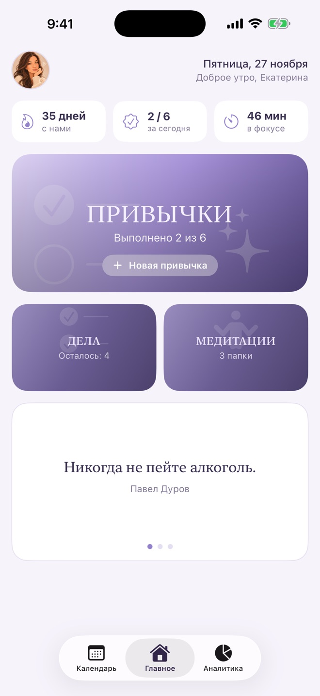
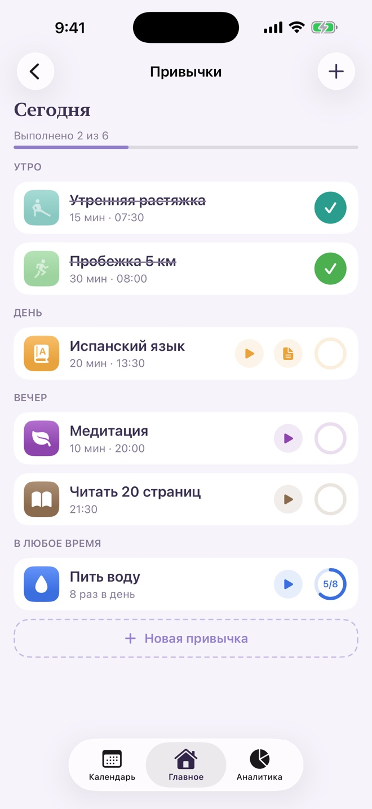
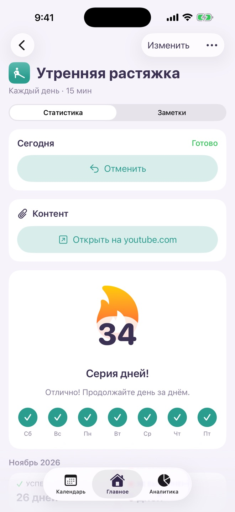
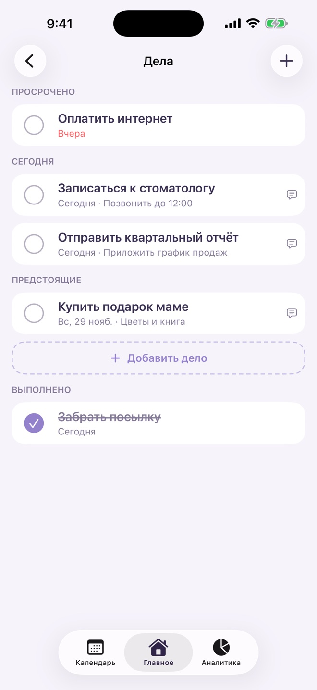
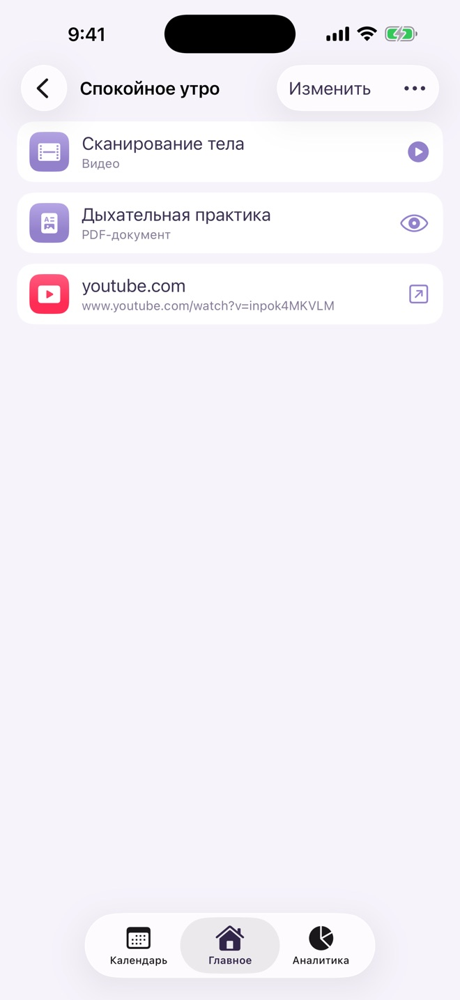
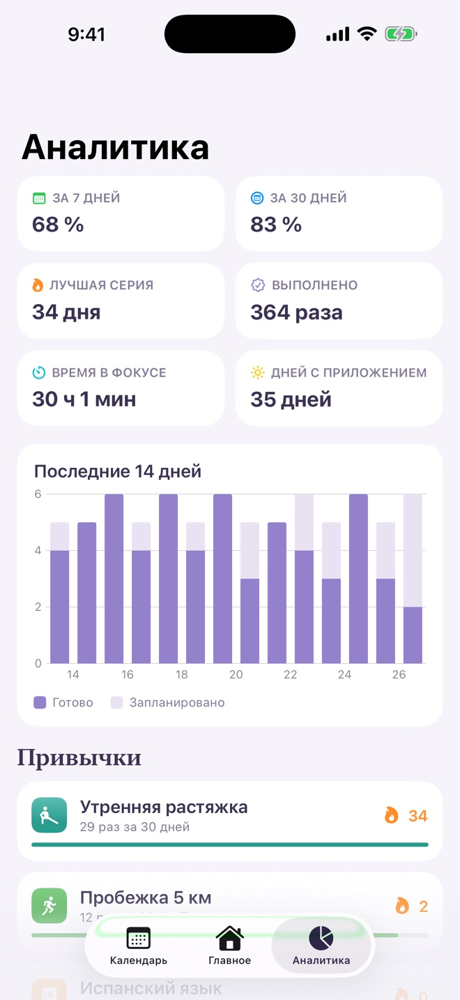
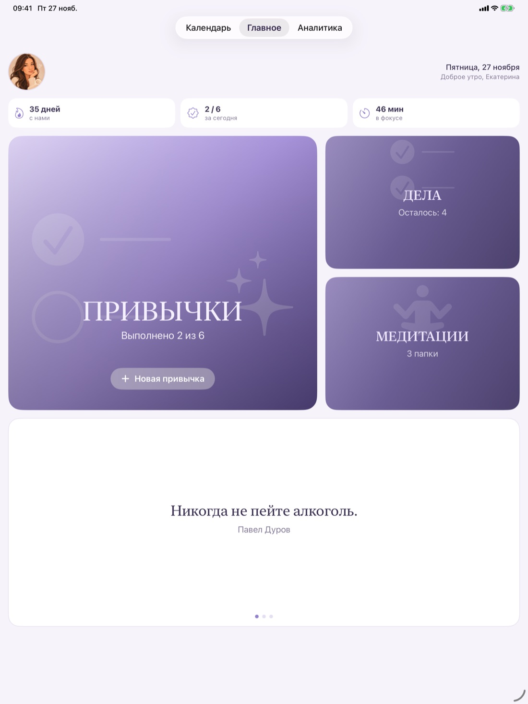

Для iPhone и iPad
Маленькие привычки.
Большие результаты.
Формируйте привычки, которые остаются с вами, держите дела под контролем и собирайте медитации, видео и документы в одном спокойном месте.

Три главных раздела
Всё, что нужно для вашего распорядка дня, и ничего лишнего.
Привычки
Повторение по любому расписанию, цель на день, напоминания, таймер фокуса и серия дней подряд.
Дела
Разовые задачи с датой и комментарием. Отмечайте галочкой — просроченные сразу видны.
Медитации
Папки с названием для ваших практик: видео, аудио, PDF, документы и ссылки — всё под рукой.
Гибкие повторы
Каждый день, по дням недели, по числам месяца, раз в несколько дней или в выбранные даты.
Таймер фокуса
Задайте привычке длительность, нажмите «Начать» — и получите уведомление, когда время выйдет.
Напоминания
Одно или несколько напоминаний для каждой привычки. На сегодня они прекращаются, как только привычка выполнена.
Серии и цели
Набирайте серию дней, ставьте цель вроде «8 раз в день» и пропускайте день, не теряя прогресса.
Контент к привычке
Добавьте заметки и видео, PDF или любой документ — или ссылку на YouTube — и открывайте их во время практики.
Понятная аналитика
Процент выполнения за 7 и 30 дней, время в фокусе, лучшие серии и график за 14 дней.
Спокойный лавандовый дизайн
Мягкие цвета, наглядный прогресс и ничего лишнего.





Также на iPad
Создан для большого экрана
На iPad привычки, дела и медитации расположены рядом, а папки медитаций открываются сеткой карточек.
Требуется iOS или iPadOS 26.5 или новее.

Немного мотивации каждый день
Если ты ошибся, не надо бояться менять ситуацию и долго терпеть.Сергей Галицкий
Три новые цитаты каждый день от успешных предпринимателей и бизнес-тренеров — листайте их на главном экране.
Конфиденциальность по умолчанию
Без аккаунта, регистрации, рекламы и слежки. Ваши привычки, дела, заметки и файлы хранятся только на вашем устройстве и никогда не передаются нам.
Политика конфиденциальности →Контакты
Есть вопрос, идея или нашли ошибку? Напишите нам — мы читаем каждое письмо.
eluzgin@gmail.com